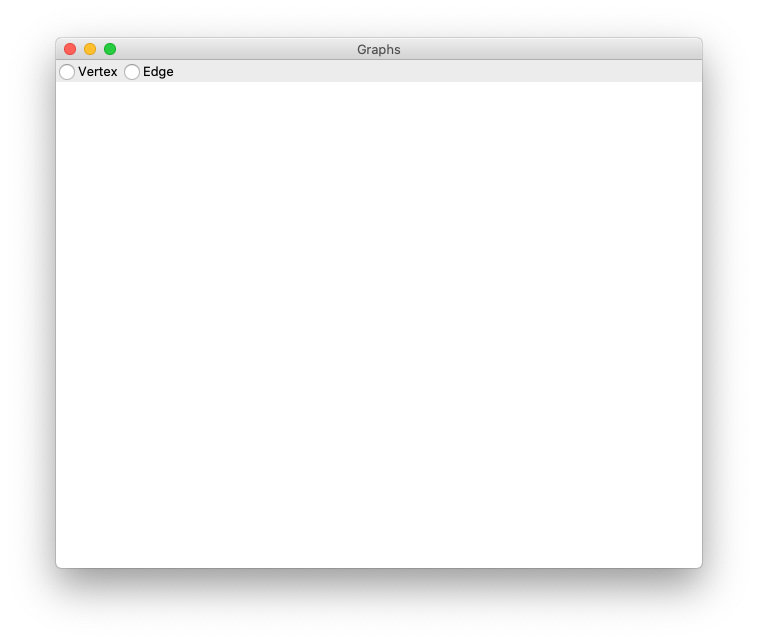
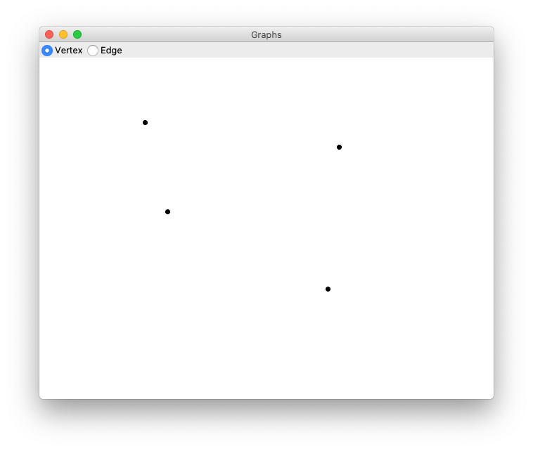
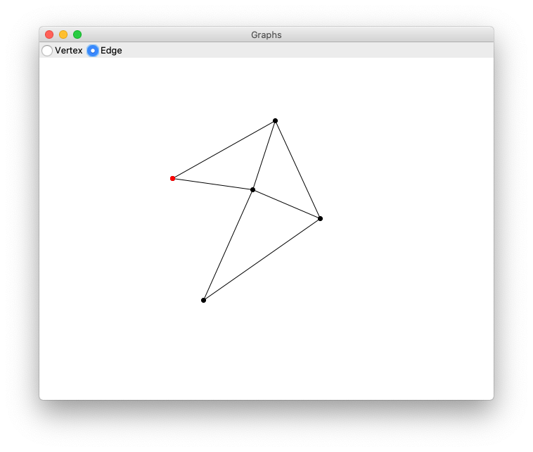

Tutorial - Drawing Graphs with ticklish_ui
The source code for this tutorial can be found here.
Table of Contents
A note on function currying and pymonad
pymonad is a package for monadic style functional programming in
python.
I've written the tutorial using pymonad's curry decorator to
keep function definitions flat because I think it makes them
easier to read and understand. However, the linked code uses
nested functions to accomplish the same behaviour so you should be
able to run the example code without having to install pymonad.
If you're not familiar with function currying, it's a way to turn a function which takes several inputs into several functions which each take a single input. The practical upshot of which is you can apply a function to only some of its arguments and call the resulting function with the remainder of the arguments later.
Here's a quick example:
from pymonad.tools import curry @curry(2) # Because the function takes 2 arguments def add(x, y): return x + y
If you call this function with two arguments, it does exactly what you would expect:
print(add(1, 1))
2
But if you call it with only one argument, it returns a new function which expects the remaining argument.
add_2 = add(2) print(add_2(3)) print(add_2(4)) print(add_2(5))
5 6 7
In this tutorial, currying is used to allow event handlers to take "extra" arguments which we'll discuss more when we get to the event code.
Program structure
The program uses the Model-View-Presenter architectural pattern and consists of four files:
- main.py
- loads all of the components and starts the program
- presenter.py
- the Presenter class which fascilitates communication between the model and the view
- model.py
- Vertex, Edge and Graph data structures
- view.py
- The GraphView class which wraps the actual UI
implemented using
ticklish_ui
The main.py module
We'll start with the easy stuff: main.py's only job is to load
the Presenter, Graph, and GraphView classes, initialize them and
then start the program.
# main.py from presenter import Presenter from view import GraphView from model import Graph Presenter(GraphView(), Graph()).start()
Of course, none of those exist yet, so let's move on!
Handling communication
The job of the Presenter class is to handle communication between
the view and the model. The view and the model can't communicate
with each other directly, they can only communicate with Presenter
which decides what to do and delegates to the model, view, or both.
All of Presenter's methods are pseudo-private: They're not
intended to be called by either the model or the view. The only way
for the view to communicate with Presenter is to generate
events. We use virtual events to define what the view is able to
communicate. The program only lets us do a two things: add vertices
and add edges. But since an edge requires two vertices, we need to
be able to select vertices as well. So, our events will be:
<<AddVertex>>, <<AddEdge>>, and <<SelectVertex>>.
So let's start defining the Presenter class.
# presenter.py class Presenter: def __init__(self, view, model): self.view = view self.model = model view.get_event_stream('<<AddVertex>>') view.get_event_stream('<<SelectVertex>>') view.get_event_stream('<<AddEdge>>') def start(self): self.view.mainloop()
The start method just calls mainloop on the view which will
start the application.
With ticklish_ui we bind events using the get_event_stream
method which returns a light-weight reactive stream object
capturing those events. In the above code we store instances of the
view and model and then define three event streams, one for each of
the events Presenter is prepared to respond to. We're not yet
doing anything with those events but we are capturing them when
they happen.
Defining the UI
The GraphView class defines our actual GUI.
# view.py class GraphView: def __init__(self): self.ui = Application( 'Graphs', # .row1 [RadioGroup('mode', ['Vertex', 'Edge'])], # .row2 [Canvas(640, 480)], ) def get_event_stream(self, event_sequence): return self.ui.get_event_stream(event_sequence) def mainloop(self): self.ui.mainloop()
The get_event_stream and mainloop methods just wrap the methods
on the Application object.
The GUI itself is defined using the ticklish_ui Application
class. The first argument is the window title and all remaining
arguments are lists of ticklish_ui widgets which will be laid out
as rows. The source code includes has a bunch of examples
showing how to use the various widgets.
The above code will produce something that looks like this:

It may look a bit different depending on what the tkinter default theme is
on your system.
Adding Vertices
Alright, let's make this actually do something. We want to add a
vertex to the graph when we click on the canvas, if the
'Vertex' radio button is selected. If 'Edge' is selected we don't do
anything for now. We need to catch button click events
and, like before, we use get_event_stream to do it.
# view.py class GraphView(View): def __init__(self): self.ui = Application( 'Graphs', # .row1 [RadioGroup('mode', ['Vertex', 'Edge'])], # .row2 [Canvas(640, 480).options(name='canvas')], ) self.ui.get_event_stream('<ButtonRelease-1>').by_name('canvas')
Mapping and Filtering Streams
When we have an event stream we use the filter and map methods
to create new streams from old ones adding behaviours as we
go. by_name is a built-in filter for events which filters by the
name of the widget on which the event occurred. The options method
is used to assign additional options to widgets; here we use it to
give the canvas a name. The event stream above catches left-click
events which happen on the canvas. Clicks on the radio buttons are
ignored by this stream.
There's also a by_class filter. The RadioGroup takes a name as
its first argument and all of the radio buttons in that group are
assigned to the same class. In the above code the group as a whole
is called 'mode' while the two buttons belong to the class 'Mode'
(note capitalization.) If we wanted to catch clicks on the radio
buttons we could do this:
self.ui.get_event_stream('<ButtonRelease-1>').by_class('Mode')
And we'd get an event whenever either radio button is clicked. But we won't need that for this application.
Sending the <<AddVertex>> event
Here's the code to send <<AddVertex>> to Presenter.
# view.py class GraphView: def __init__(self): # GUI definition... (self.ui.get_event_stream('<ButtonRelease-1>') .by_name('canvas') .filter(self._mode_equals('Vertex')) .map(self._event_generate('<<AddVertex>>')) )
Both map and filter take functions as arguments. In the case of
filter the function should return a boolean value: if True,
executions continues down the stream; if False, it stops. map
can return any value.
So the above event handler says:
- Given a button click
- If the click occurred on 'canvas'
- And the selected mode is 'Vertex'
- Then generate the event
<<AddVertex>>
The methods _mode_equals and _event_generate are defined like so:
# view.py @curry(3) def _mode_equals(self, mode, _event_ignored): set_mode = self.ui.nametowidget('.row1.mode').variable.get() return set_mode == mode @curry(3) def _event_generate(self, event_sequence, event): self.ui.event_generate(event_sequence, x=event.x, y=event.y) return event
nametowidget and event_generate (no leading underscore) are both
methods on tkinter widgets which you can learn about here. The
Application class automatically names the rows of your GUI rowN
where N is the row number starting with 1.
_mode_equals checks which radio button is currently selected,
compares it to our desired mode and returns a boolean.
_event_generate generates an event and sets its x and y
coordinates to the same as the x, y coordinates of the incomming
event: in this case the position of the mouse cursor when the left
mouse button was clicked.
Both _mode_equals and _event_generate are curried which allows
us to call them with their first arguments — mode and
event_sequence respectively — and return a function as map and
filter expect without having to wrap the call in a lambda:
# ... .map(lambda event: self._event_generate('<<AddVertex>>', event)) # ...
Or, alternatively, define a function inside a function:
def _event_generate(self, event_sequence): def handler(event): self.ui.event_generate(event_sequence, x=event.x, y=event.y) return event return handler
Either of those approaches is fine but currying allows us to write the function in a straight-forward way and then apply only the arguments we want. This is what was meant earlier by using currying to give event handlers extra arguments.
Handling the <<AddVertex>> event
When the <<AddVertex>> event stream in Presenter gets an
event it needs to do three things:
- Extract the x and y coordinates
- Ask the model to create a new vertex
- Ask the view to draw the vertex
We modify the event stream like this:
# presenter.py class Presenter: def __init__(self, view, model): # ... (view.get_event_stream('<<AddVertex>>') .map(self._get_coordinates) .map(self._add_vertex) .map(self._draw_vertex('black')) )
Next we define the methods:
# presenter.py class Presenter: # ... def _get_coordinates(self, event): return event.x, event.y def _add_vertex(self, coordinates): return self.model.add_vertex(*coordinates) @curry(3) def _draw_vertex(self, color, vertex): self.view.draw_vertex(color, vertex) # ...
It's worth noting that although the stream starts out with an
event, functions passed to map can return any value they
want. _get_coordinates returns a tuple which is passed to
_add_vertex; _add_vertex will return a vertex which is passed
to _draw_vertex; and so on. Event streams don't have to remain
event streams, they can transform and process data in whatever way
makes sense to get the job done.
The model and drawing vertices
The model for our graphing application is very simple and fairly
self explanatory. It tracks a list of vertices, a list of edges,
provides methods to create each and a method to find a vertex in
the vicinity of a given x and y coordinate which will be used
later to select vertices. The complete implementation of the model
is:
# model.py from dataclasses import dataclass import math @dataclass class Vertex: x: int y: int @dataclass class Edge: start: Vertex end: Vertex class Graph: def __init__(self): self.vertices = [] self.edges = [] def add_vertex(self, x, y): vertex = Vertex(x, y) self.vertices.append(vertex) return vertex def add_edge(self, start, end): edge = Edge(start, end) self.edges.append(edge) return edge def find_vertex(self, x, y): for v in self.vertices: dist = math.sqrt((v.x - x)**2 + (v.y - y)**2) if dist <= 6: return v
After the vertex has been added, Presenter can ask GraphView to
draw it. Which it does, like so:
# view.py class GraphView: def __init__(self): # Application definition... self.canvas = self.ui.nametowidget('.row2.canvas') # Event stream definitions ... # ... def draw_vertex(self, color, vertex): x1, y1 = vertex.x - 3, vertex.y - 3 x2, y2 = vertex.x + 3, vertex.y + 3 self.canvas.create_oval(x1, y1, x2, y2, fill=color, outline=color) # ...
You can find more about drawing on the canvas here.
We should now be able to add vertices to our graph!

Selecting vertices and adding edges
There's nothing drastically different about handling the remaining functionality so we'll go over it fairly quickly.
Selecting vertices is part of adding an edge so we only select
vertices in 'Edge' mode and we only draw an edge once we've
selected two vertices. For this tutorial I decided to cache the
selections in the Presenter class but in a real application you'd
probably pass the selection on to the view so it could do something
with it. The <<AddEdge>> event will check how many selections have
been made and add an edge only if there are exactly two selections.
In the view, when we click in 'Edge' mode, this is what happens:
# view.py class GraphView(View): def __init__(self): # GUI definition... # Assign button clicks on the canvas to the variable 'click'. click = self.ui.get_event_stream('<ButtonRelease-1>').by_name('canvas') (click .filter(self._mode_equals('Edge')) .map(self._event_generate('<<SelectVertex>>')) .map(self._event_generate('<<AddEdge>>')) )
If we get_event_stream on the same event more than once it will
overwrite our previous stream and our previous handler will stop
working. To get around that we can assign the stream to a variable
and then map and filter to effectively split the stream into
multiple streams. To make everything work we have to modify our
previous <<AddVertex>> code to this:
# view.py (click .filter(self._mode_equals('Vertex')) .map(self._event_generate('<<AddVertex>>')) )
Similarly, we implement the Presenter code to handle the other two events.
# presenter.py class Presenter: def __init__(self, view, model): # Other initialization... self.selections = [] # Other event streams ... (view.get_event_stream('<<SelectVertex>>') .map(self._get_coordinates) .map(self._find_vertex) .filter(self._vertex_exists) .map(self._cache_vertex) .map(self._draw_vertex('red')) ) (view.get_event_stream('<<AddEdge>>') .filter(self._two_selections) .map(self._add_edge) .map(self._update_display) .map(self._clear_selections) )
And the methods which make them work:
# presenter.py class Presenter: # ... def _add_edge(self, _event_ignored): return self.model.add_edge(*self.selections) def _cache_vertex(self, vertex): self.selections.append(vertex) return vertex def _clear_selections(self, _argument_ignored): self.selections = [] def _find_vertex(self, coordinates): return self.model.find_vertex(*coordinates) def _two_selections(self, _event_ignored): return len(self.selections) == 2 def _update_display(self, _argument_ignored): self.view.clear() for v in self.model.vertices: self.view.draw_vertex('black', v) for e in self.model.edges: self.view.draw_edge(e) def _vertex_exists(self, vertex): return vertex is not None
The last thing that needs to be done is define clear and
draw_edge on GraphView:
# view.py class GraphView: # ... def clear(self): self.canvas.delete('all') def draw_edge(self, edge): x1, y1 = edge.start.x, edge.start.y x2, y2 = edge.end.x, edge.end.y self.canvas.create_line(x1, y1, x2, y2)
And that's it!
